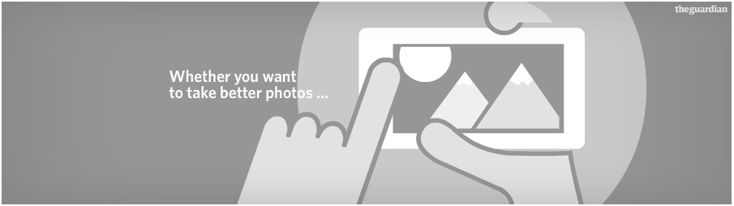

 Viktor Yanukovych, centre, with three former Ukrainian presidents in Kiev. Photograph: Andriy Mosienko/EPA
Viktor Yanukovych, centre, with three former Ukrainian presidents in Kiev. Photograph: Andriy Mosienko/EPA
Ukraine's president has promised to restart work on an association agreement with the European Union, as he sought to quell the huge protests that have gripped Kiev in recent weeks.
Viktor Yanukovych said a delegation would travel to Brussels on Wednesday, and suggested the association pact he pulled out of last month could be signed in the spring if Europe could give Ukraine better financial conditions. "We tasked the government to accelerate this work and involve as many specialists as needed," said Yanukovych during a televised roundtable discussion with the three former presidents of independent Ukraine. "When is the next summit? If it takes place in March then we have to finish this work by March. But it will depend not only on us, it will also depend on the European commission. This is our goal."
Yanukovych pulled out of the deal amid heavy pressure from Russia, which wants Ukraine to join its rival Customs Union. Russia is believed to have offered cash-strapped Ukraine financial support and reduced gas prices. "We want to achieve conditions that satisfy Ukraine, Ukrainian producers, the Ukrainian people," said Yanukovych on Tuesday. Russia and the EU have accused each other of putting unacceptable pressure on Ukraine. Russia's parliament issued a statement on Tuesday criticising western politicians for openly supporting the protesters.
The EU's foreign policy chief, Catherine Ashton, was in Kiev on Tuesday and met Yanukovych. Later she was due to meet three opposition leaders who have been leading the protests, including the heavyweight boxer Vitali Klitschko. She visited Independence Square, which has been turned into a tent camp with log fires, food stalls and a stage blaring pop music and speeches from opposition leaders. Arseniy Yatsenyuk, a member of the jailed former prime minister Yulia Tymoshenko's Fatherland party, led Ashton away amid a media scrum, taking her through a police line to waiting cars in which they left for a meeting.
"The most important thing is that all the European leaders to come here have supported not the opposition or political parties but the people on the square," said Yatsenyuk.
During the roundtable, Ukraine's first president, Leonid Kravchuk, criticised the actions of the riot police. "When people are causing disorder, riot police officers should arrest them and take them away, but never beat them. Or even worse, do it in front of cameras," he said.
Yanukovych interrupted him and said: "When they started to attack the riot police, they got their response." He did, however, say that some of those arrested in the clashes should be released. Kiev's biggest protest since the 2004 Orange Revolution took place on Sunday when hundreds of thousands of people flooded the streets and a small group tore down a statue of Vladimir Lenin and hacked it to pieces with hammers. On Monday riot police dismantled barricades around government buildings in central Kiev and moved into positions around Independence Square. However, they have not attempted to clear the square or evict protesters from the occupied city hall. On the square, protesters dug in for what is set to be the coldest night yet, with temperatures set to drop to minus 13C. Many have promised to fight back if riot police attempt to storm the square, but as the crisis drags on there appears to be little appetite on either side for further violence.
Tags: Eric Schmidt, Google, NSA, Obama administration, United States